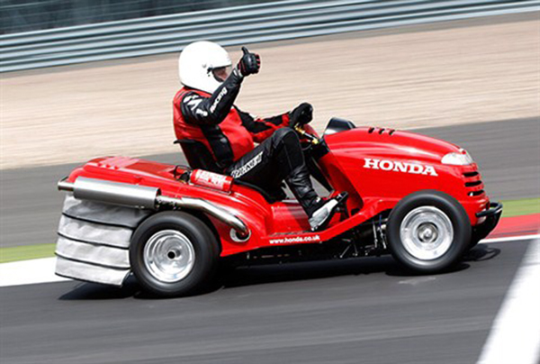
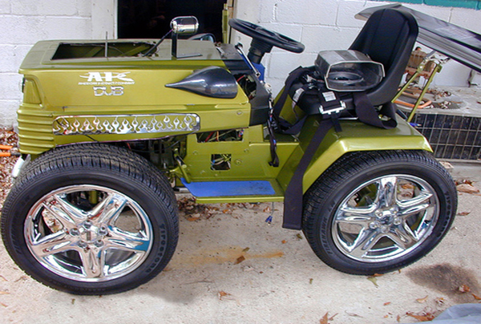
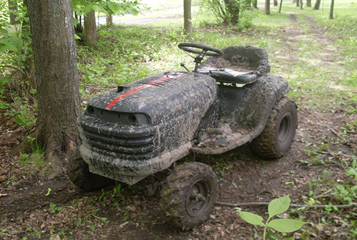
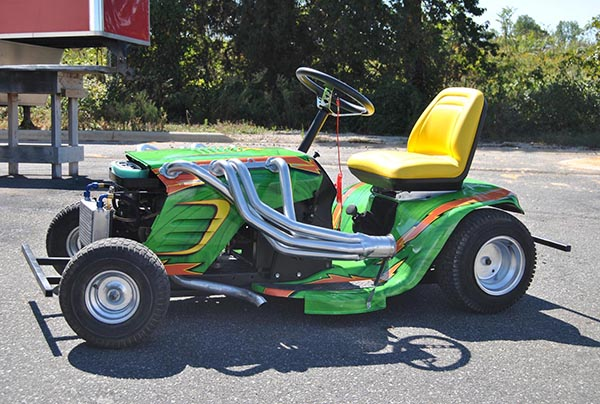

Mower Trends
The Mean Mower
Built for speed this mower is geared to achieve a top speed in excess of 209km/h (130mph).
The Monster

This monster won the 2014 lawn mowers convention award for highest raised mower.
The Lawn Cruiser
This pimped out lawn mower won the Arizona Lawn Mower prized cup for most DUB-OUT lawn mower.
Off Road!!
With plenty or torque and more than enough room to maneuver this mower brings life to the back woods.
Dirt Devil
This mower is built with a low chassis that improves both handling and stability in the tight corners.
The Drag Racer
The drag mowers are causing all the commotion on the detroit speedways! The fans love it